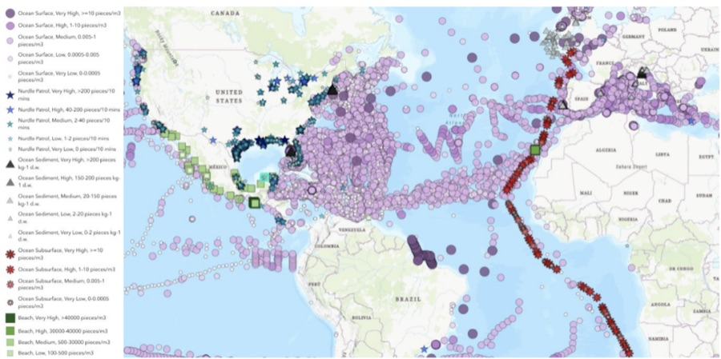
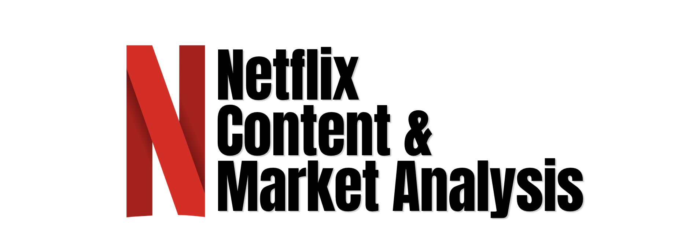

Part.01
Projects
Research, machine learning and analytics work, with the code, papers and reports behind each one.

Independent Research
Marine Microplastic Hotspots
Graph Neural Network that fuses sparse NOAA field samples with ocean data to predict microplastic hotspots in new regions.

Management Analytics · Paper
Early-Career Attrition Study
Mixed-methods study combining a 38-response employee survey with interviews of senior managers to explain why early-career employees leave.

Agentic AI
E-commerce Support Agents
Hybrid ML and multi-agent system for e-commerce migration incidents. Investigator, Researcher, Analyst and Responder agents use clustering, semantic search and RAG, with confidence-based routing and human review.

Computer Vision · App
AI Fitness Tracker
Real-time exercise analysis that evaluates form and detects cheated reps.

Business Analytics
Netflix Content Strategy
Analysis of Netflix's content portfolio to find what drives subscriber growth and retention.


Financial Analytics
FMCG Ratio Analysis
Liquidity, profitability and solvency comparison of India's top four FMCG companies, with an interactive dashboard.

Statistics
Shark Attack Hypothesis Testing
Exploratory analysis and significance tests on global shark attack data.
.png)
Web Tool
Variance Analysis Tool
Interactive tool that compares scenarios and highlights the key metric deviations.

Part.03
About
I'm a B.Tech Computer Science (Data Science) student at MPSTME, NMIMS in Mumbai. I'm most interested in AI and data analytics: building models and pipelines that hold up on real, messy data.
At PwC I built a multi-agent system that turns scanned documents into structured data. Since then I've worked on computer vision, graph neural networks and agentic AI, and written up several of these projects as research papers.
What motivates me is figuring out why things work and exploring different ways to solve the same problem. I'm open to data science, ML and AI opportunities.
- 70%
- less manual effort with my GenAI pipeline at PwC
- 3
- research papers written
- 10
- projects across ML, AI and analytics
Toolkit
- Python
- SQL
- scikit-learn
- PySpark
- LangChain
- LangGraph
- AutoGen
- Azure OpenAI
- OpenCV
- Power BI
- Tableau
- Databricks